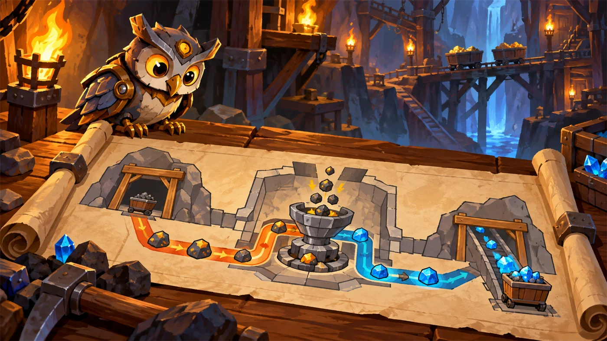
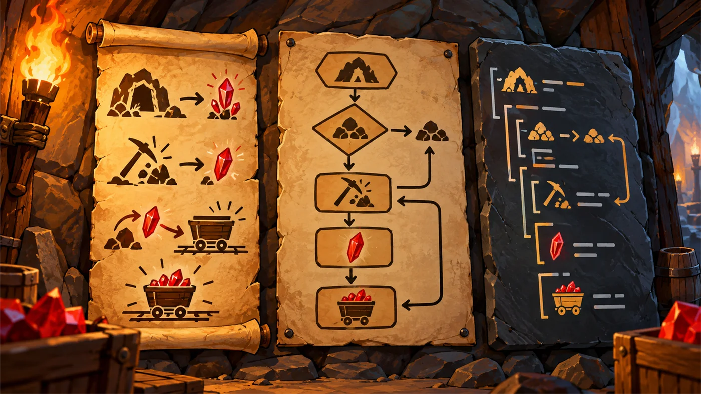
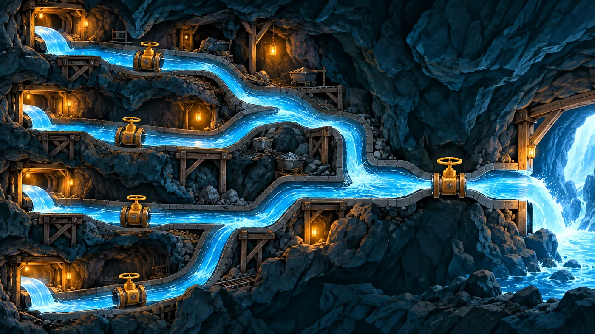
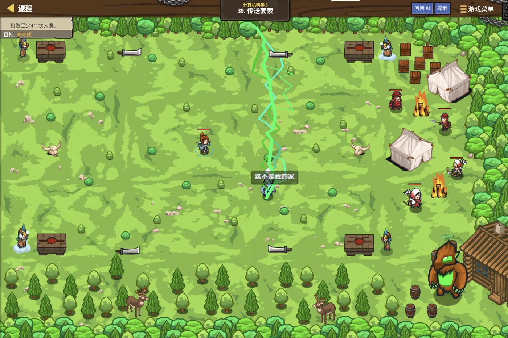

故事：矿坑深处的传送带上，物品一件接一件地滑过去：有金币、有药水，还有说不清用途的杂物。
你不可能全都捡——只能挑需要的。
可什么该捡、什么不该捡？贺舒曼说：先把规矩想清楚，再动手。规矩就是算法。
扣哒考级 · GESP PYTHON 三级 · 第 4 单元 | 符文矿坑 RUNEMARK MINE
矿道图纸 算法与描述
Algorithms & Their Description

贺舒曼
镜中先知 · 你的向导
矿坑的工头办公室墙上，钉着一张又旧又大的羊皮纸。你凑近一看，上面没有一个字，也没有一行代码，
全是圆圈、方框和箭头。
这是矿道的图纸。工头说，矿工们照着它挖了三十年。
贺舒曼在镜子里补了一句：先有图纸，才有矿道。写程序也一样——先有算法，才有代码。
这是矿道的图纸。工头说，矿工们照着它挖了三十年。
贺舒曼在镜子里补了一句：先有图纸，才有矿道。写程序也一样——先有算法，才有代码。
贺舒曼 · 镜中先知
二级的时候我们已经见过算法和流程图了。这一单元要往深里走一步：不仅要会画，还要会"评价"——同一个问题，两种算法谁更快？
这才是三级真正想考你的东西。

assets/illustrations/py-L3-04-01_mine_blueprint.webp
【配图位】工头办公室里一张摊开的巨型羊皮纸图纸，布满圆角框、矩形框、菱形框与箭头；图纸边缘用发光符文标注着分支与循环的回路，一盏矿灯照亮纸面的一角。
0 单元导语与目标
Unit Overview
0.1 学习目标
1学完这个单元，你将能……
- 说清算法与程序的区别和联系
- 用自然语言、流程图、伪代码描述同一个算法
- 画出含分支和循环的完整流程图
- 说出一个好算法要满足哪些条件
- 比较两种算法的步骤数量
- 把一段描述准确翻译成 Python 代码
2对标 GESP 考纲（Python 三级）
- 掌握算法的概念与特征（有穷性、确定性、可行性、输入输出）
- 掌握算法的三种描述方法：自然语言、流程图、伪代码
- 了解算法效率的初步概念，能比较简单算法的执行步骤
- 考核目标：能读懂流程图与伪代码，并转换成程序
0.2 考纲对照
| 本单元小节 | 对应考纲条目 | 真题常考形式 |
|---|---|---|
| 1 算法与程序 | 算法的概念与特征 | 判断一段描述算不算算法 |
| 2 三种描述方式 | 算法的描述方法 | 哪种方式最适合表达"有分支的步骤" |
| 3 实例：找出最大值 | 用算法解决简单问题 | 补全找最大值的算法步骤 |
| 4 好算法的标准 | 算法的评价 | 正确性与效率哪个更重要 |
1 算法与程序
Algorithm vs Program
1.1 算法 ≠ 程序
这两个词经常被混着用，但它们不是一回事。
图 2（SVG）：算法是"怎么做"的思路，程序是这个思路的"实现"
1.2 算法的五个特征
打个比方：
算法和程序的关系，就像菜谱和厨师的关系——
菜谱写的是"这道菜怎么做"，谁来照着做都做得出同一道菜；
而程序是"某一位厨师用他会的语言，把这张菜谱说出来"。
同一张菜谱可以让很多厨师说成不同的话；同一个算法也可以写成很多种语言的程序。
菜谱写的是"这道菜怎么做"，谁来照着做都做得出同一道菜；
而程序是"某一位厨师用他会的语言，把这张菜谱说出来"。
同一张菜谱可以让很多厨师说成不同的话；同一个算法也可以写成很多种语言的程序。
算法必须具备的五个特征：
① 有穷性——必须在有限步内结束，不能永远算下去；
② 确定性——每一步的含义都是唯一的，不能有歧义；
③ 可行性——每一步都能真正执行；
④ 有输入——可以有 0 个或多个输入；
⑤ 有输出——至少要有一个结果输出，否则做了等于白做。
① 有穷性——必须在有限步内结束，不能永远算下去；
② 确定性——每一步的含义都是唯一的，不能有歧义；
③ 可行性——每一步都能真正执行；
④ 有输入——可以有 0 个或多个输入；
⑤ 有输出——至少要有一个结果输出，否则做了等于白做。

塔林 · 金甲战士
我们打铁前会先在地上画个样子：先打哪、再打哪、最后淬火。那个"样子"就是算法。
至于用左手锤还是右手锤、用铁锤还是石锤——那是"用什么工具实现"， 跟图纸本身没关系。
2 三种描述方式
Three Ways to Describe
2.1 自然语言、流程图与伪代码
同一个算法，可以用三种方式说给别人听：
| 方式 | 长什么样 | 优点 | 缺点 |
|---|---|---|---|
| 自然语言 | 用中文、英文直接写步骤 | 人人看得懂 | 啰嗦、可能有歧义 |
| 流程图 | 圆角框、矩形框、菱形框 + 箭头 | 直观，走向一目了然 | 复杂算法画起来很占地方 |
| 伪代码 | 像代码但不是具体语言的语句 | 紧贴代码，方便翻译 | 需要一点编程基础才看得懂 |
同一个算法，三种说法（求 n 的阶乘）
对照
【自然语言】
第一步：把结果设为 1。
第二步：把当前数设为 1。
第三步：如果当前数不大于 n，就把结果乘以当前数，然后把当前数加 1，再回到第三步。
第四步：输出结果。
【伪代码】
result ← 1
i ← 1
while i ≤ n:
result ← result × i
i ← i + 1
输出 result
【Python】
result = 1
for i in range(1, n + 1):
result = result * i
print(result)要点 三者的逻辑完全一样，只是"说法"从随意到严谨

assets/illustrations/py-L3-04-02_three_descriptions.webp
【配图位】矿壁上一字排开三块并挂的展板：左边一块刻着一段能读懂的口语说明，中间一块钉着一张画有圆角框、菱形与箭头的羊皮纸流程图，右边一块石板上刻着缩写形式的伪代码；三块板之间用发光箭头横向连接，表示它们描述的是同一件事；一名矿工站在中间那张流程图前指点。
考试怎么考？
最常见的是——给你一段伪代码或流程图，让你写出对应的 Python 代码，
或者反过来，给你代码让你补全流程图。
所以读图、读伪代码的能力，比"画得漂亮"重要得多。
所以读图、读伪代码的能力，比"画得漂亮"重要得多。
3 例子：找出最大值
Worked Example
3.1 先把问题说清楚
这是个三级考试里出现频率极高的经典例子，我们完整走一遍。
图 4（SVG）：求最大值——外层是循环，内层是判断
伪代码 → Python
Python
# 伪代码
# max ← a[0]
# for i ← 1 到 n-1:
# if a[i] > max: max ← a[i]
# 输出 max
# 对应的 Python
nums = [3, 17, 9, 25, 6]
max_val = nums[0]
for i in range(1, len(nums)):
if nums[i] > max_val:
max_val = nums[i]
print(max_val)OUTPUT 25
3.2 完整走一遍

assets/illustrations/py-L3-04-03_max_flow.webp
【配图位】矿道里排着一列高低不一的矿石堆，一名矿工从左往右逐堆走过；手里始终举着"到目前为止最大的那块"矿石，遇到更大的就换上新的，身后地面上留下一串发光的小脚印与标记，表示已经比过的都被记住了。
为什么 max 一开始要取第一个数？
因为这样才能保证"max 里始终装着目前见过的最大数"这个性质一直成立。
如果随便设成 0，遇到全是负数的列表（比如 -5、-3、-8），答案就错了。
如果随便设成 0，遇到全是负数的列表（比如 -5、-3、-8），答案就错了。
4 好算法的标准
What Makes a Good Algorithm
4.1 正确性优先
同一个问题往往有很多种解法。那怎么判断哪个更好？三级主要看两点：正确和省事。
| 标准 | 意思 | 怎么看 |
|---|---|---|
| 正确性 | 对所有的合法输入都能给出正确答案 | 多试几组数据，特别是边界情况 |
| 可读性 | 别人看得懂，自己也看得懂 | 变量名起得清楚、步骤分得明白 |
| 效率 | 干同样的事，花的步骤更少 | 数一数循环跑了几次 |
同一个任务，两种算法（求 1 到 n 的和）
Python
# 算法一：老老实实一个一个加
total = 0
for i in range(1, n + 1):
total = total + i
# n = 100 时要循环 100 次
# 算法二：用等差数列求和公式
total = (1 + n) * n // 2
# 不管 n 多大，都只要 1 步结论 两个算法的结果完全一样，但算法二快得多——这就是"效率"的区别

扣哒鸭 · 调试官
我给学生讲过一件事：算法选得好不好，在数据小的时候看不出来，数据一大就天差地别。好比数一堆金币：一枚一枚数，一万枚要数一万次； 但如果你知道"一共 100 行、每行 100 枚"，乘法一算就完了。
这就是为什么数学好的人写程序往往更轻松。
4.2 然后是效率
打个比方：
两个算法都能算对，比的就是谁更省事——
一个要跑一千步，一个只要跑十步，结果一样，但花的时间和力气差了一百倍。
所以在保证"答案对"的前提下，步数越少、越省空间，就是越好的算法。
一个要跑一千步，一个只要跑十步，结果一样，但花的时间和力气差了一百倍。
所以在保证"答案对"的前提下，步数越少、越省空间，就是越好的算法。
5 代码实战
Level Practice
关卡
传送套索
进入关卡 →思路：把筛选规矩写成一条条条件，再让程序照着执行。 这正是"算法"落地成程序的标准流程：先用自然语言说清规矩，再翻译成条件表达式。

assets/stages/py-L3-04-stage1_teleport_lasso.webp
【关卡截图位】请把《传送套索》的游戏画面截图放到此处（放入 assets/stages/ 目录，文件名为 py-L3-04-stage1_teleport_lasso.webp）。
重点示例：把规矩翻译成条件
Python
# 自然语言：如果物品类型是 coin 而且价值等于 2，就捡
if item.type == "coin" and item.value == 2:
hero.moveXY(item.pos.x, item.pos.y)要点 一个"而且"对应一个
and；条件越清楚，机器执行得越准
体会"描述"的力量：
捡值 2 个金币的金币——这句话人和机器都能懂，
但机器需要你把它拆成
把模糊的话变精确，就是"算法描述"的核心功夫。
去扣哒世界闯这一关 →
type == "coin" 和
value == 2 两个精确的判断。把模糊的话变精确，就是"算法描述"的核心功夫。
6 常见陷阱
Common Pitfalls

扣哒鸭 · 调试官
这一单元的错，多半是"描述得不够精确"惹的祸。四条，条条都常见。
1
把算法和程序混为一谈。以为"算法就是代码"。

扣哒鸭：算法是思路，程序是实现。
同一个算法，用 Python 能写，用 C++ 也能写，甚至用纸笔一步步算也行。
没有语言的算法照样能存在；没有算法的程序，那只是一堆敲进去的字。
没有语言的算法照样能存在；没有算法的程序，那只是一堆敲进去的字。
正确理解：算法独立于语言，程序依赖语言
2
流程图里把判断框画成了矩形。菱形与矩形混着用。

扣哒鸭：只要出现"是不是""有没有"，就必须用菱形。
菱形有两条出路，矩形只有一个出口。画错了，看图的同学就会以为这里不分支。
正确做法：条件判断用菱形；执行动作、赋值用矩形
3
找最大值的初值随便设成 0。

扣哒鸭：如果数据里全是负数，比如 -5、-3、-8，
设成 0 的话最后会输出 0——而 0 根本不在数据里！
正确做法是拿第一个数当初始值。
正确做法是拿第一个数当初始值。
正确做法：
max_val = nums[0]，再从第 2 个数开始比4
把带歧义的描述当成算法。写"处理一下数据"这种句子。

扣哒鸭："处理一下"是给人看的客套话，不是算法。
算法要求每一步都确定、没有第二种理解。
你写"把最大的挑出来"，机器会问你：怎么挑？从哪儿开始？比到哪儿停？
你写"把最大的挑出来"，机器会问你：怎么挑？从哪儿开始？比到哪儿停？
正确做法：每一步都写到"没有第二种解释"的程度
7 题目练习
Practice
第 1 题改编自 2026 年 6 月 · Python 三级 · 编程题 1（加密），其余为原创练习题。
改编自 2026 年 6 月 · Python 三级 · 编程题 1单选题
矿坑的密码本要给一串数字加密：密码本给出 10 个数字，第 1 个表示 0 加密后变成几、第 2 个表示 1 变成几……依次类推。
现在要加密的数字是
现在要加密的数字是
0 2 0 3 4 1 9，密码本是 9 0 1 2 3 4 5 6 7 8，加密后输出的结果是（ ）。A.0 2 0 3 4 1 9
B.9 1 9 2 3 0 8
C.1 0 1 4 5 2 3
D.9 0 9 1 2 3 4
B.9 1 9 2 3 0 8
C.1 0 1 4 5 2 3
D.9 0 9 1 2 3 4
查看答案与详解
答案：B。密码本
0→9、1→0、2→1、3→2、4→3、5→4、6→5、7→6、8→7、9→8。
把它当成一张"替换表"用，逐个替换原数字：
0→9、2→1、0→9、3→2、4→3、1→0、9→8，合起来就是 9 1 9 2 3 0 8。
算法思路（本题考的就是"读懂算法"）：
① 读入密码本，存成一个长度为 10 的列表（下标就是原数字）；
② 逐个读原数字 d，输出
一句话：这类"按规则一个个换掉"的题，关键是把规则先存成表，再一遍扫过去 —— 这就是"描述算法"的基本功。
对应小节2 三种描述方式。
9 0 1 2 3 4 5 6 7 8 的意思是一张对照表：0→9、1→0、2→1、3→2、4→3、5→4、6→5、7→6、8→7、9→8。
把它当成一张"替换表"用，逐个替换原数字：
0→9、2→1、0→9、3→2、4→3、1→0、9→8，合起来就是 9 1 9 2 3 0 8。
算法思路（本题考的就是"读懂算法"）：
① 读入密码本，存成一个长度为 10 的列表（下标就是原数字）；
② 逐个读原数字 d，输出
table[d]。一句话：这类"按规则一个个换掉"的题，关键是把规则先存成表，再一遍扫过去 —— 这就是"描述算法"的基本功。
对应小节2 三种描述方式。
原创练习题单选题
下列关于算法的说法，正确的是（ ）。
A.算法必须用 Python 编写
B.算法可以用自然语言、流程图或伪代码描述
C.算法可以永远执行下去，不需要结束
D.同一个问题的算法只有一个
B.算法可以用自然语言、流程图或伪代码描述
C.算法可以永远执行下去，不需要结束
D.同一个问题的算法只有一个
查看答案与详解
答案：B。
A 错：算法与语言无关，Python 只是"实现方式"之一；
C 错：算法必须有有穷性，要在有限步内结束；
D 错：同一个问题往往有多种算法（比如求和既可以用循环，也可以用公式）。
对应小节1 算法与程序。
A 错：算法与语言无关，Python 只是"实现方式"之一；
C 错：算法必须有有穷性，要在有限步内结束；
D 错：同一个问题往往有多种算法（比如求和既可以用循环，也可以用公式）。
对应小节1 算法与程序。
原创练习题单选题
在流程图中，表示"判断某个条件是否成立"的符号是（ ）。
A.圆角矩形 B.矩形 C.菱形 D.平行四边形
查看答案与详解
答案：C。菱形是判断框，它有两条出路（是 / 否）。
圆角矩形是起止框，矩形是处理框，平行四边形是输入输出框。
对应小节3 例子：找出最大值。
圆角矩形是起止框，矩形是处理框，平行四边形是输入输出框。
对应小节3 例子：找出最大值。
原创练习题单选题
要计算 1 到 100 的和，下面两种算法哪种效率更高？（ ）
算法甲：
total = 0
for i in range(1, 101):
total = total + i
算法乙：
total = (1 + 100) * 100 // 2
A.算法甲更高，因为它更直观
B.算法乙更高，因为它只需要一步计算
C.两者一样
D.无法比较
B.算法乙更高，因为它只需要一步计算
C.两者一样
D.无法比较
查看答案与详解
答案：B。算法甲要循环 100 次，算法乙只需要一次乘除。
结论：结果相同的情况下，执行步骤更少的算法更高效。 数据规模越大，差距越明显。
对应小节4 好算法的标准。
结论：结果相同的情况下，执行步骤更少的算法更高效。 数据规模越大，差距越明显。
对应小节4 好算法的标准。
原创练习题判断题
一个算法可以没有输出。（ ）
查看答案与详解
答案：错误（×）。算法必须至少有一个输出——
否则你算了半天，什么结果都没得到，那这个过程对解决问题毫无意义。
对比：算法可以没有输入（比如直接输出 1 到 100 的和），但不能没有输出。
对应小节1 算法与程序（算法的五个特征）。
对比：算法可以没有输入（比如直接输出 1 到 100 的和），但不能没有输出。
对应小节1 算法与程序（算法的五个特征）。
原创练习题单选题
下面这段伪代码的功能是（ ）。
max ← a[0]
for i ← 1 到 n-1:
if a[i] > max:
max ← a[i]
输出 max
A.求数组元素的和
B.求数组元素的最大值
C.把数组从小到大排序
D.统计数组元素的个数
B.求数组元素的最大值
C.把数组从小到大排序
D.统计数组元素的个数
查看答案与详解
答案：B。变量名
提示：如果想把
对应小节3 例子：找出最大值。
max 已经提示了答案，
而且逻辑是"遇到比 max 更大的就更新它"，最后输出的一定是最大值。提示：如果想把
> 改成 <，
就变成了求最小值——这是很常见的改编考法。对应小节3 例子：找出最大值。
原创练习题编程题
题目要求：已知算法描述为——
① 输入一个正整数 n；② 令 s = 0；③ 让 i 从 1 到 n 依次取值，每次把 i 加到 s 上；
④ 输出 s。请把它翻译成 Python 程序。
查看参考答案与要点
n = int(input("请输入一个正整数：")) # ① 输入
s = 0 # ② 初始化累加器
for i in range(1, n + 1): # ③ i 从 1 到 n
s = s + i # 把 i 累加进 s
print(s) # ④ 输出
要点：
① range(1, n + 1) 才能取到 n，写成 range(n) 会少加一次；
② 累加变量必须在循环之前初始化，写在循环里会被反复清零；
③ 这段算法就是"求 1 到 n 的和"，输入 100 时结果是 5050。
对应小节2 三种描述方式。
8 本单元小结
Unit Summary
贺舒曼 · 镜中先知
最后再叮嘱三句：一、算法是图纸，程序是房子；图纸不挑工具。
二、算法要有穷、确定、可行、有输入、有输出。
三、同一个问题可以有很多算法——挑步骤少的那个。
记住这三句，考试里关于"算法"的选择题，你基本都能拿下。
你在矿道图纸前收获了什么
- 算法与程序——算法是解决问题的步骤，与语言无关；程序是算法的具体实现。
- 五个特征——有穷性、确定性、可行性、有输入、有输出。
- 三种描述方式——自然语言（好懂但啰嗦）、流程图（直观）、伪代码（贴近代码）。
- 流程图符号——圆角起止、矩形处理、菱形判断、平行四边形输入输出。
- 经典算法——求最大值：先取第一个数当初始值，再逐个比较更新。
- 算法评价——看正确性、可读性和效率；效率主要看执行步骤的多少。